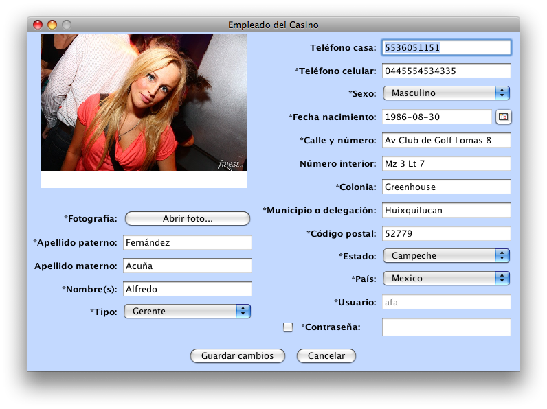

Manual de usuario
1. Sesiones de usuario
1.1 Iniciar sesión
Para iniciar sesión es necesario contar con una cuenta de usuario activa. Al iniciar sesión el programa reconoce automáticamente el nivel de privilegios del usuario y sólo le permitirá ejecutar aquellas funciones para las que está autorizado. A continuación se muestra la pantalla para iniciar sesión:
Mientras utiliza el sistema, puede que ocurran errores de permisos. Esto significa que usted está intentando realizar una operación para la que no tiene permisos suficientes. Cuando ocurra dicho error, se mostrará la siguiente pantalla:

1.2 Cerrar sesión
En caso de que
un diferente empleado quiera tener acceso a las funcionalidades del sistema, el usuario actual deberá cerrar su sesión y el nuevo empleado iniciar la suya. Cerrar la sesión significa cerrar la aplicación hasta que otro empleado con un usuario activo inicie sesión. Para cerrar una sesión vaya al menú Archivo / Cerrar sesión.
2. Administración de clientes
2.1 Dar de alta
Para dar de alta un cliente vaya al menú Archivo / Nuevo miembro... Deberá ver una pantalla como la que se muestra a continuación:
La forma se validará al momento de dar clic en el botón de Agregar. En caso de que exista algún error al llenar la forma, se le indicará para su corrección. Cuando usted selecciona México como país, la forma automáticamente desplegará la lista de estados de la República para que usted elija el apropiado. La aplicación mostrará pantallas de éxito o de error según sea el caso.
2.2 Buscar
La única forma de buscar a un cliente es por su número de identificación. La manera estándar de lectura de números de identificación es a través del lector de barras leyendo la credencial de cada miembro. La aplicación buscará al miembro en la base de datos de la sucursal local y en la información que se tenga sincronizada del resto de las sucursales. En caso de que el miembro sea local, se tendrá acceso a toda su información y se podrá modificar como sea necesario. Sin embargo, si se trata de un cliente externo, únicamente se podrá ver a qué sucursal pertenece y su fotografía. A continuación se muestra la pantalla de búsqueda de miembros, en el cuadro de texto deberá teclearse o leerse con el scanner de códigos de barras el número de identificación del cliente.

En caso de que el cliente no se haya encontrado localmente o en otra de las sucursales, se mostrará la siguiente pantalla:
Si el miembro existe en la base de datos se le mostrará una lista de acciones posibles para ese miembro como la que se muestra a continuación:

2.3 Actualizar información personal
Para actualizar información personal de un cliente será necesario primeramente buscarlo.Para buscarlo lea el inciso 2.2. En la ventana de opciones seleccione "Actualizar información personal" y dé clic en OK. Verá una pantalla como la siguiente:
Estando en esta pantalla, haga los cambios necesarios y dé clic en "Guardar cambios" para actualizar la información en la base de datos. Si la operación fue exitosa, verá una pantalla como la siguiente:
2.4 Administrar fichas
Para agregar o restar fichas de un cliente será necesario primeramente buscarlo.Para buscarlo lea el inciso 2.2. En la ventana de opciones seleccione "Administrar fichas" y dé clic en OK. Verá una pantalla como la siguiente:
Escriba la cantidad en el cuadro de texto y dé clic sobre el botón deseado ya sea para agregar o restar la cantidad escrita. Dada la importancia de la operación se le preguntará confirmación:
Si la operación fue exitosa, la pantalla de administración de fichas se actualizará con la nueva cantidad de fichas del cliente:
2.5 Dar de baja
Para dar de baja un cliente será necesario primeramente buscarlo.Para buscarlo lea el inciso 2.2. En la ventana de opciones seleccione "Dar de baja" y dé clic en OK:
Dada la importancia de la operación se le pedirá confirmación.
La operación es irreversible.
3. Administración de empleados
3.1 Dar de alta
Para dar de alta un empleado vaya al menú Archivo / Nuevo empleado... Deberá ver una pantalla como la que se muestra a continuación:
La forma se validará al momento de dar clic en el botón de Agregar. En caso de que exista algún error al llenar la forma, se le indicará para su corrección. México está seleccionado automáticamente como país pues no se pueden contratar empleados que vivan fuera de México, la forma automáticamente desplegará la lista de estados de la República para que usted elija el apropiado. La aplicación mostrará pantallas de éxito o de error según sea el caso.
3.2 Buscar
Para buscar un empleado vaya al menú Administrar / Empleados... Se mostrará una pantalla con todos los empleados registrados en el sistema en donde se pueden buscar para realizar operaciones con ellos. Los empleados se mostrarán en orden alfabético por nombre:
Escriba en el cuadro de texto lo que desea buscar y la pantalla se actualizará automáticamente con la información apropiada. Cuando el cuadro de texto esté vacío, se mostrarán todos los empleados en la base de datos.
3.3 Desactivar cuenta de usuario
Primero encuentre al empleado cuya cuenta desea desactivar siguiendo las instrucciones del inciso 3.2. Ahora dé doble clic sobre la fila del empleado a desactivar y seleccione la opción "Desactivar cuenta de usuario":
Si tiene los suficientes permisos para desactivar la cuenta, se mostrará un mensaje de confirmación como el siguiente:
Posteriormente se actualizará automáticamente la ventana de Administración de empleados con el cambio realizado.
3.4 Reactivar cuenta de usuario
Primero encuentre al empleado cuya cuenta desea reactivar siguiendo las instrucciones del inciso 3.2. Ahora dé doble clic sobre la fila del empleado a reactivar y seleccione la opción "Reactivar cuenta de usuario":

Si tiene los suficientes permisos para reactivar la cuenta, se mostrará un mensaje de confirmación como el siguiente:
Posteriormente se actualizará automáticamente la ventana de Administración de empleados con el cambio realizado.
3.5 Dar de baja temporal
Primero encuentre al empleado que desea dar de baja siguiendo las instrucciones del inciso 3.2. Ahora dé doble clic sobre la fila del empleado y seleccione la opción "Dar baja temporal":
Si tiene los suficientes permisos para dar de baja al empleao, se mostrará un mensaje de confirmación como el siguiente:
Posteriormente se actualizará automáticamente la ventana de Administración de empleados con el cambio realizado.
3.6 Recontratar empleado
Primero encuentre al empleado que desea recontratar siguiendo las instrucciones del inciso 3.2. Ahora dé doble clic sobre la fila del empleado y seleccione la opción "Recontratar empleado":
Si tiene los suficientes permisos para recontratar al empleado, se mostrará un mensaje de confirmación como el siguiente:
Posteriormente se actualizará automáticamente la ventana de Administración de empleados con el cambio realizado.
3.7 Dar de baja definitiva
No es posible dar de baja definitiva a un empleado dado que siempre se almacenará información histórica de los mismos aunque ya no laboren en el casino.
3.8 Cambiar usuario o contraseña
Los usuarios no se pueden cambiar una vez que han sido creados. Por otra parte, las contraseñas sí se pueden cambiar y esto se hace en la ventana de actualizar información personal. Tendrá que palomear la opción de "Contraseña" para indicar que sea cambiarla. Vea la sección 3.9 para más detalles.
3.9 Actualizar información personal
Primero encuentre al empleado cuya información desea actualizar siguiendo las instrucciones del inciso 3.2. Ahora dé doble clic sobre la fila del empleado y seleccione la opción "Reactivar cuenta de usuario":
Si tiene los suficientes permisos para actualizar la información, se mostrará una pantalla coma la siguiente:

Haga los cambios correspondientes y dé clic sobre el botón de "Guardar cambios" al terminar. La forma se validará como cuando se insertó el cliente.
4. Administración de tipos de juego
4.1 Dar de alta
Escriba en el cuadro de texto el juego que desea agregar y dé clic sobre "Agregar". Si ya existe un tipo de juego con ese nombre, no se agregará a la base de datos.
4.2 Dar de baja
Seleccione el juego de la lista que desea borrar y dé clic sobre "Borrar". Se eliminará instantáneamente.
5. Administración de mesas
5.1 Dar de alta
Para registrar una mesa que físicamente exista en la sucursal debe escribir el ID de la mesa, que debe estar físicamente impreso en la mesa y seleccionar el tipo de juego que ofrecerá dicha mesa. Puede haber varias mesas que ofrezcan el mismo tipo de juego pero no puede haber más de una mesa con el mismo identificador. La existencia de mesas no implica que esté disponible para juego, para eso se tienen que usar sesiones.
5.2 Cambiar mesa de tipo de juego
Dé doble clic sobre la fila de la mesa que desea editar. Seleccione la opción de "Cambiar tipo de juego".
Ahora le aparecerá la siguiente pantalla. Deberá seleccionar el nuevo tipo de juego:
Dé clic en OK y el cambio se verá reflejado en la ventana de administración de mesas.
5.3 Dar de baja
Dé doble clic sobre la mesa que desea eliminar, seleccione la opción de "Eliminar mesa" y dé clic en OK. El cambio se verá reflejado posteriormente en la ventana de administración de mesas de juego.
6. Administración de sesiones de juego
7. Sincronización
Dé clic en el menú "Servicios" y luego en la opción de "Sincronizar". Verá la siguiente pantalla, en donde se estará buscando a las otras sucursales disponibles. Para ello, se accederá al servidor central.

Una vez que el servidor central envía las sucursales que tienen permisos de recibir sincronizaciones, se desplegará la siguiente pantalla.
El botón de "Actualizar" hará que la aplicación se conecte al servidor central y traiga la lista de sucursales nuevamente. El botón de "Sincronizar" se conectará con las sucursales disponibles a enviar la información mas reciente. Si hay algún error de sincronización éste se desplegará. Si no se muestra ninguna ventana, significa que se lograron hacer las actualizaciones.
(c) Copyright Alfredo Fernández Acuña (alfredofernandeza@gmail.com)